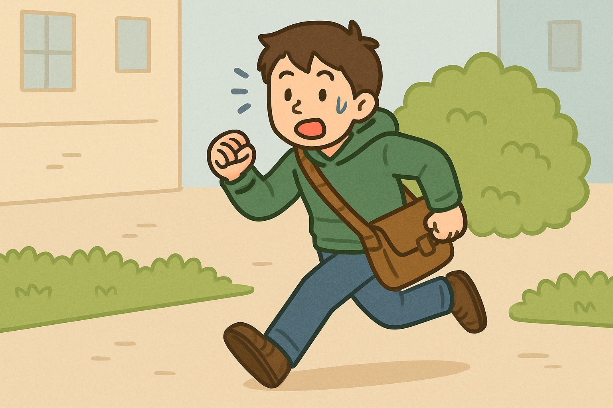
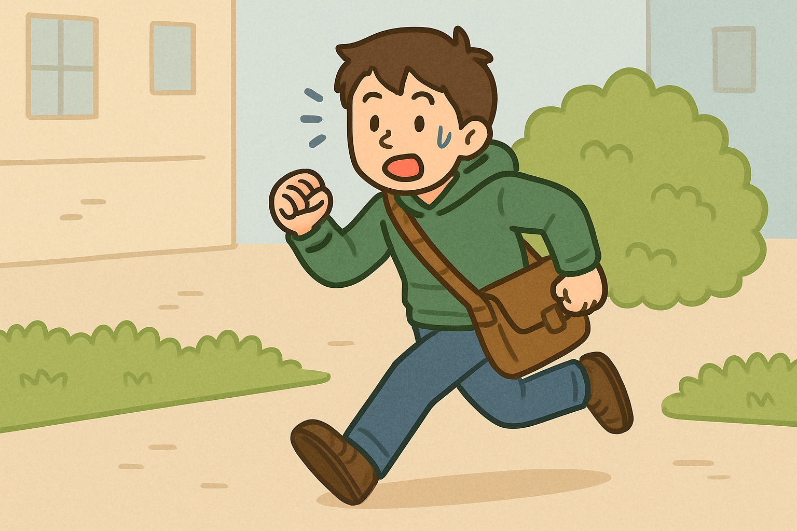
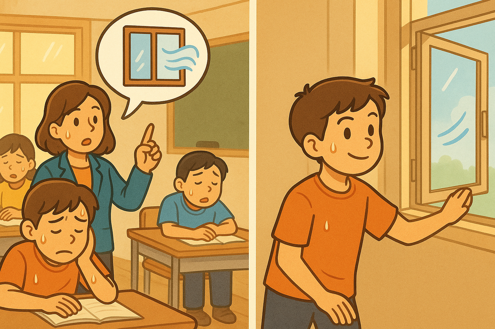
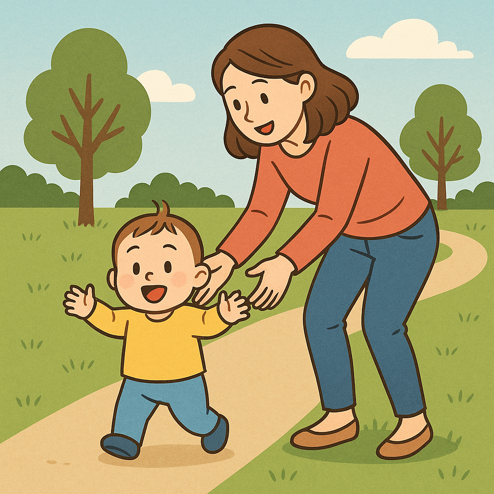

-씨는 오늘 친구하고 공원에 가려고 했어요.
그런데 갑자기 비가 왔어요.그래서 오늘은 집에서 게임을 하기로 했어요.
(동사)＋-는 대신에
-는 것을 말하는 표현이에요.
공원에 가는 대신에 집에서 게임을 해요.
는 대신에
는 대신에
(형용사)＋-은 대신에
반대
이 옷은 예쁜 대신에 너무 비싸요.
(명사)＋-대신에
커피 대신에 따뜻한 차를 마셔요.
(동사)＋-는 대신에

놀다 ＋ -게 하다 → 놀게 하다
아버지가 아이들을 밖에서 놀게 했어요.

걷다 ＋ 게 하다 → 걷게 하다
엄마가 아기를 공원에서 걷게 했어요.

굽다 ＋ -게 하다 → 굽게 하다
어머니가 고기를 굽게 했어요.
문장을 듣고 따라 읽어 봅시다.
'-게 하다'를 사용해서 빈칸에 알맞게 대답해 주세요.

식당에서 _________ 집에서 직접 요리를 해요.(먹다)
그림을 보고 빈칸에 알맞게 대답해 주세요.

Q:유미 씨, 오늘 점심 같이 먹어요. 제가 점심을 살게요.
A:좋아요. 마이클 씨가 __________제가 커피를 살게요.
그림을 보고 빈칸에 알맞게 대답해 주세요.

Q:하늘 씨, 요즘 게임을 안 해요?
A:네, 요즘은 _________________.
🎉 학습을 완료했습니다!
아래 버튼을 눌러 처음부터 다시 시작하거나, 다른 학습으로 이동해 보세요.